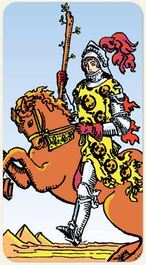

Sua roupa lembra um pouco a roupa do louco, sua postura lembra um grito de guerra, um personagem ou arquétipo de bravura e proteção, leva a luz onde chega.
Por um lado, é o menos intelectual da Corte, por outro lado, é o último a desistir. Ele não vai vai contestar o plano, ele quer cumprir a missão.
Positivo: Coragem para enfrentar desafios, o fogo é um elemento faminto que consome tudo à sua volta para realizar aquilo que deseja, não existe outra alternativa a não ser vencer, a sua competitividade o torna um herói, sua força interior o leva a fazer o possível, protetores espirituais em ação.
Negativo: É a força do fogo que consome tudo e não produz nada além de destruição, violência física e sexual, sexualidade incontrolável, intolerância, impaciência, grosseria, ataques espirituais.
Símbolos: Armadura, Elmo, Cavalo Laranjado, Salamandra, Pena Vermelha, Pirâmides.
Cores: Amarelo, Vermelho, Laranjado, Azul, Verde.
Elementos: Fogo e Fogo.
Referências: Justas (esporte), Cavalo de Fogo (desenho animado).